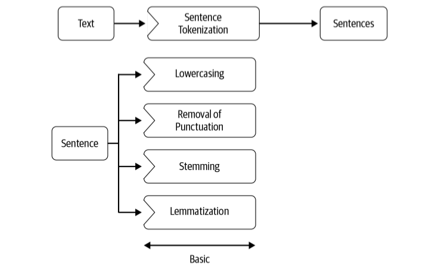
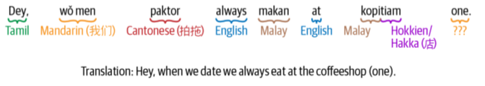

2.3 Preprocessing
Tokenize, normalize, drop stops, and choose stemming or lemmatization.
1. Canonical form
Cleanup gave you a string. Pre-processing turns that string into a sequence you can count, stem, or embed.
Common steps:

Not every task wants every step. Named-entity work wants capitalization. Sentiment often wants ! and emoji. A search index may want stems. Decide from the job, then keep the recipe fixed so train and test match.
2. Tokens and types
A token is one occurrence. A type is the distinct string.
To be or not to be → 6 tokens (to, be, or, not, to, be) and 4 types (to, be, or, not). The set of types is the vocabulary.
Whitespace split is the baseline you already know:
"Every time I learn something new, it pushes some old stuff out of my brain.".split(" ")
You get new, and brain. glued to punctuation. str.split() is not a tokenizer.
Use nltk.word_tokenize or spaCy. They split words and punctuation. That is what Lab 1 already showed.
3. Punctuation, case, stop words
Do not strip all punctuation by reflex.
| Why keep it | Example |
|---|---|
| Boundaries | . ? ; mark sentences and clauses |
| Illocution | ! and ? change the act of the sentence |
| Sentiment | :-) and emoji are features |
Lowercasing merges Apple the company with apple the fruit. That is good for topic bags of words. It is bad for names.
Stop words (the, a, of, is) are high-frequency function words. Dropping them shrinks a count vector. Do not drop them for tasks that need grammar or polarity (not is a stop word in many lists and it flips sentiment).
from nltk.corpus import stopwords
stops = set(stopwords.words("english"))
[t for t in tokens if t.lower() not in stops]
4. Stemming vs lemmatization
English (and many other languages) inflects: organizes, organized, organizing. You often want one index term.
| Stemming | Lemmatization | |
|---|---|---|
| Method | Chop a suffix with a heuristic | Morphological analysis → dictionary form |
| Example | organizes → organ |
organizes → organize |
| Output | May not be a word (flying → fli) |
Aims at a real lemma |
| Tool | PorterStemmer |
WordNetLemmatizer (needs POS for best results) |
Stemming is fast and crude. Lemmatization is slower and usually cleaner. Lab 1 already ran both on the same list. Use one consistently; do not mix them in the same vocabulary.
5. Other normalization
Typical extra steps:
- map digits (
9→nine, or all numbers to#) - expand a small set of abbreviations (
Dr.→Doctor) if the domain is stable - collapse repeated characters (
soooo→soo) on social text
Language detection belongs near the front. Most tokenizers, stop lists, and stemmers are language-specific. English tools on Spanish (or on a mix) produce garbage, not a slightly worse model.
Code mixing is two or more languages in one post. Tokenizers trained on one language break. Language ID on the whole document is not enough.

6. A short recipe
For a bag-of-words classifier on English reviews, a default that is good enough:
- language-filter to English
- tokenize (not
split) - lowercase
- drop stop words except negators if you care about sentiment
- lemmatize (or stem, not both)
For POS or NER (note 2.4), skip lowercasing and stop-word removal.
7. Practice
-
Tokenize
Wow, we can finally stop using the split function!by hand the way NLTK would. How many tokens? -
Give one task where you should not lowercase, and one where you should.
-
Why can
flying→flistill be useful in a search index even thoughfliis not a word?